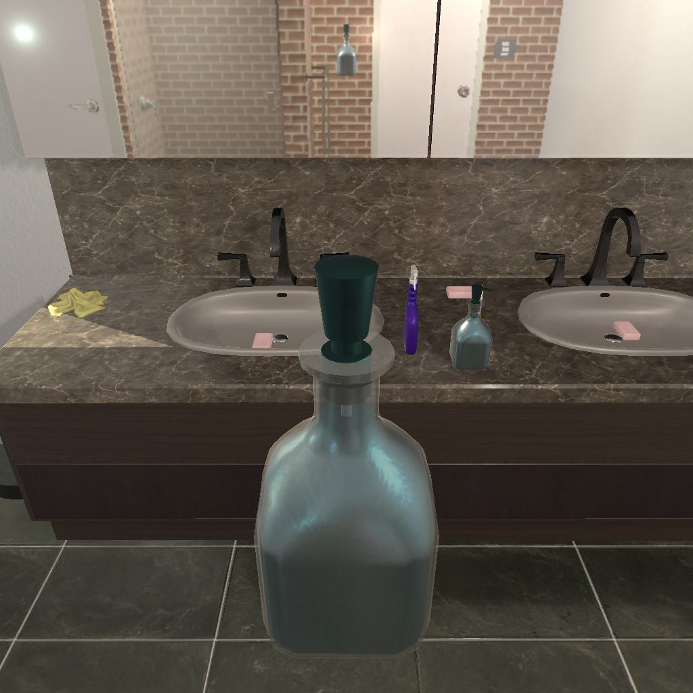
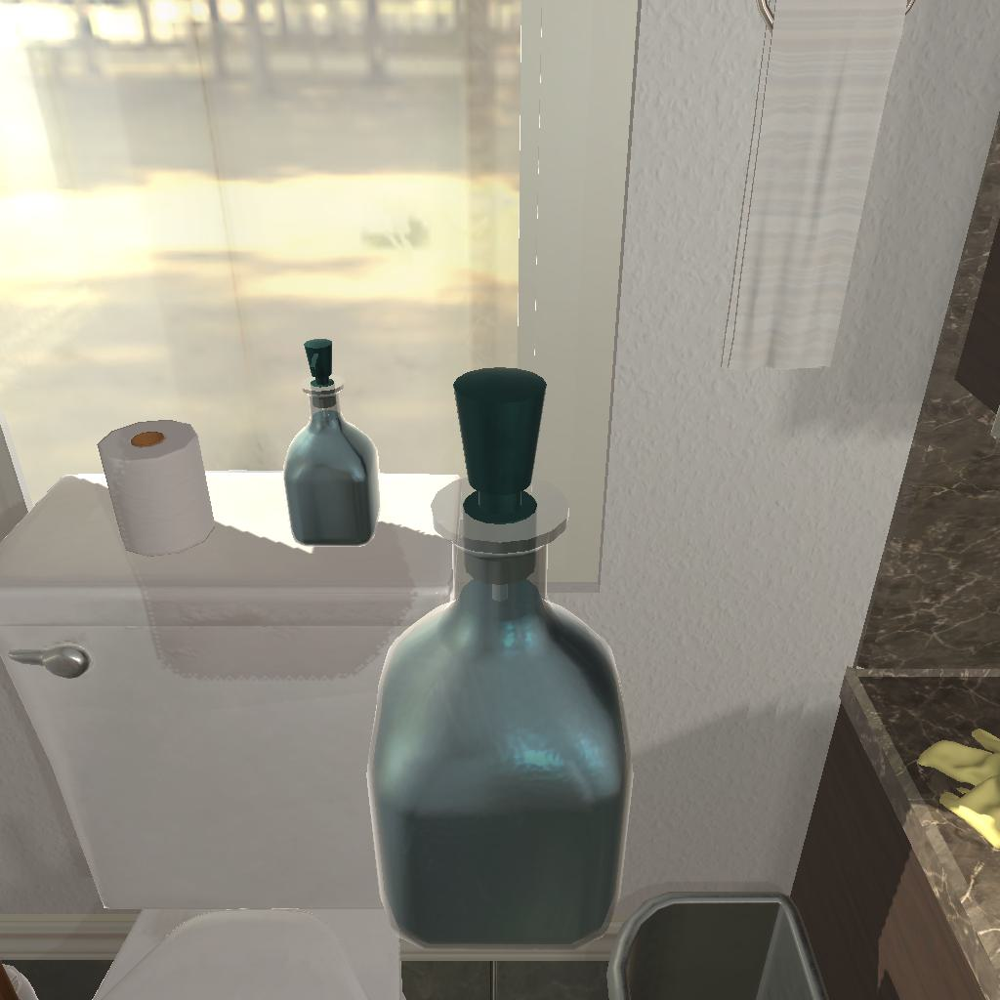

---------------------------------------------------------task: 27---------------------------------------------------------
--------------------------------------------------------------------------------------------------------------------------------------------------------------------
--------------------------------------------------------------------------------------------------------------------------------------------------------------------
Step:--------------------------------------------------------------------------14-------------------------------------------------------------------------------
----------------------------------------
VLM Prompt:
Image1:
Image2:
Image3:
**Instruction**
1. Analyze the provided images to identify all visible household objects and compare the difference between images (e.h. whether the object is opened or not and taken on hand or not), focusing on those relevant to the task description "find two soapbottle and put them in garbagecan."
2. Use the analysis of images and the task hint "The agent must find an object of the desired type, pick it up, find the correct location to place it, put it down there, then look for another object of the desired type, pick it up, return to previous location, and put it down there with the other object." to answer the question: what is the most reasonable action in the choices for the task description "find two soapbottle and put them in garbagecan"?
3. Decide and write the answer using the template: The answer is: (i): , where i is the real number. If there is no desired object in images, search every place based on **Initial Observation** to find the object. And if no one is exactly correct, choose a similar answer.
**Initial Observation**
You are in the middle of a room. Looking quickly around you, you can see countertop (1), sinkbasin (1-2), sink (1-2), garbagecan (1), drawer (1-2), toilet (1), handtowelholder (1)
**Answer Choices**
(1): go to sinkbasin 1
(2): go to sink 1
(3): go to drawer 1
(4): go to drawer 2
(5): go to sink 2
(6): go to sinkbasin 2
(7): go to toilet 1
(8): go to handtowelholder 1
(9): put soapbottle 2 in/on garbagecan 1
(10): examine soapbottle 2
(11): examine garbagecan 1
**Answer**
Let's think step by step by following the instructions.
----------------------------------------
----------------------------------------
Original Response:
First, we analyze the images for visible household objects. In Image1, we can see two soap bottles on the countertop near sinkbasin 1 and sinkbasin 2. In Image2, one soap bottle is still on the countertop near sinkbasin 1 and the other is not visible, likely because it is taken in hand. In Image3, we can see the same soap bottle from Image2 now placed near the toilet 1, which indicates that it has been moved. The garbagecan is also visible in Image3, which is relevant to the task description.
Based on the task hint, the agent must find the soap bottles, pick them up, then put them in the garbage can. Since one soap bottle has already been moved near the toilet 1, the agent does not need to pick it up from its original location near the sinkbasins. However, the other soap bottle still needs to be picked up.
Considering the "Initial Observation" and the visible placement of objects in the images, the most reasonable next action for the task "find two soapbottle and put them in garbagecan" would be to pick up the remaining soap bottle near sinkbasin 1 and then put it in the garbage can where the other soap bottle has been placed.
The answer is: (1): go to sinkbasin 1
----------------------------------------
----------------------------------------
>>> Refine Original VLM Response and Get Pure Action: go to sinkbasin 1
----------------------------------------
-----------------------------------------------------------------
Running time: 17.545685529708862 seconds
Total Money: 17.25878999999999
-----------------------------------------------------------------
-----------------------------------------------------------------
Text Observation:You arrive at loc 1. On the sinkbasin 1, you see a faucet 2, a cloth 1, and a soapbar 3.
-----------------------------------------------------------------
UNSUCCEED